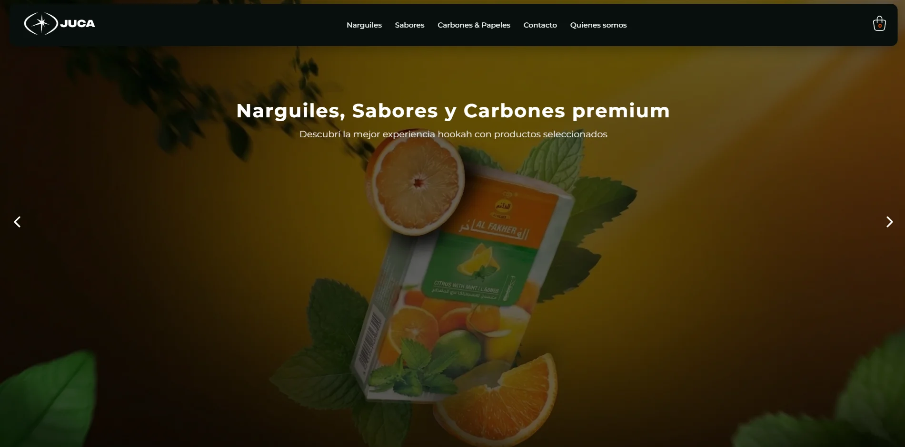

Soy
Transformando ideas en soluciones prácticas y eficientes a problemas de software.
Transformando ideas en soluciones prácticas y eficientes a problemas de software.

Desarrollo de un ecommerce a medida para la marca JUCA, que necesitaba centralizar sus ventas online y profesionalizar su presencia digital.
Se resolvió la falta de un sistema propio de gestión de productos y pedidos, implementando una plataforma completa con carrito de compras, panel administrativo y optimización de rendimiento. El enfoque estuvo en mejorar la experiencia de usuario, facilitar la gestión del negocio y permitir la escalabilidad del proyecto.
Este proyecto fue realizado como parte de un trabajo escolar, donde elegí analizar un fragmento de la película Black Clover: La espada del rey mago.
El objetivo del proyecto fue explicar de qué trata la escena, presentar a los personajes involucrados y compartir curiosidades relacionadas con la película y la obra original.
Soy estudiante/analista de sistemas enfocado en brindar soluciones eficientes a problemas de software, combinando lógica, análisis y programación. Me interesa comprender las necesidades del usuario y transformarlas en aplicaciones prácticas, optimizadas y fáciles de usar. Busco aportar valor a cada proyecto a través de la mejora de procesos y la implementación de soluciones tecnológicas adaptadas a cada contexto.
Si necesitás soluciones de software o querés colaborar en un proyecto, no dudes en escribirme. Me enfoco en transformar problemas en soluciones prácticas y eficientes. Estoy disponible para consultas, propuestas y nuevos desafíos.